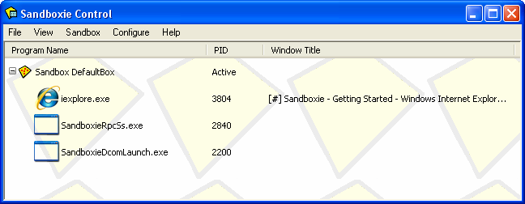

Programs View
Sandboxie Control > View Menu > Programs

The Programs View is the default view mode in Sandboxie Control. The programs running in each sandbox are displayed here, grouped by sandbox name. The list shows three columns:
-
The Program Name column displays the name of the executable file of the program. For example, the picture shows iexplore.exe, which is the executable name for Internet Explorer.
- For a row describing a sandbox, this column displays the name of the sandbox.
-
The PID column displays the process ID of the program. This is the same number that appears in the Processes tab of the Windows Task Manager. (The Windows Task Manager appears when you press the Ctrl+Shift+Esc keyboard shortcut or Ctrl+Alt+Del, which leads to the Windows logon screen.)
- For a row describing a sandbox, this column displays Active if any programs are running in the sandbox.
-
The Window Title column displays the title associated with the main window of the program.
Use the small + or - icon, located at the start of each Active sandbox row, to expand or collapse the display of programs in the sandbox.
Context Menus
The Programs View provides context menus for sandboxes and programs. To display a context menu for the item (sandbox or program) in some row, do one of the following:
-
Click the right mouse button anywhere on the row.
-
Select (highlight) the row using the mouse or keyboard, then press Shift+F10.
-
Select (highlight) the row using the mouse or keyboard, then use the View Menu -> Context Menu command.
For a sandbox row, the context menu displayed is the same as Sandbox Menu -> Sandbox Sub-Menu. See there for a full description.
For a program row, the context menu offers the following commands:
-
The Terminate Program command terminates the program.
-
The Program Settings command displays the Program Settings window for the program.
-
The Resource Access command displays the Sandbox Settings > Resource Access group of settings pages, where the program name is pre-selected in the program name filter (The list above applies to filter).
Go to Sandboxie Control, Files And Folders View, Help Topics.